We will show how reduced order models can significantly reduce the cost of general inverse problems approached through parametric level set methods. Our method drastically reduces the solution of forward problems in diffuse optimal tomography (DOT) by using interpolatory parametric model reduction. In the DOT setting, these surrogate models can approximate both the cost functional and associated Jacobian with little loss of accuracy and significantly reduced cost.
We recover diffusion and absorption coefficients,
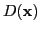
and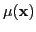
, respectively, using observations,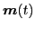
, from illumination by source signals,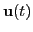
. We assume that the unknown fields can be characterized by a finite set of parameters,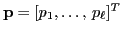
. Discretization of the underlying PDE gives the following, order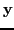
denotes the discretized photon flux;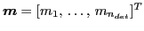
is the vector of detector outputs; the columns of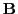
are discretizations of the source ``footprints"; and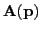
is the discretization of the diffusion and absorption terms, inheriting the parameterizations of these fields.Let
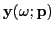
,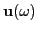
, and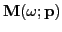
denote Fourier transforms of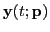
, , and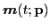
, respectively. Taking the Fourier transform of (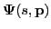
is a mapping from sources (inputs) to measurements (outputs) in the frequency domain; it is the transfer function of the dynamical system (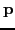
, and absorption field,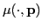
, input source,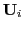
, and frequency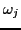
,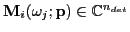
denotes the vector of observations predicted by the forward model. For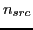
sources and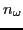
frequencies, we get
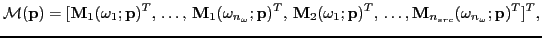
which is a vector of dimension
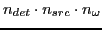
. We obtain the empirical data vector,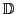
, from actual observations, and solve the optimization problem:
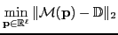
The computational cost of evaluating
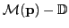
is dominated by the solution of the large, sparse block linear systems in (To reduce costs while maintaining accuracy, we seek a much smaller dynamical system of order
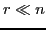
that replicates the input-output map of (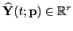
,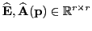
,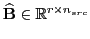
, and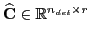
such that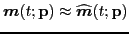
. The surrogate transfer function is
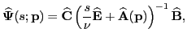
which requires only the solution of linear systems of dimension ; hence drastically reducing the cost. For a given parameter value
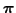
used in an optimization step, a reduced (surrogate) model for the necessary function evaluations at the frequency , involves the construction of a reduced parametric model of the form (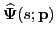
that satisfies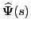
of the reduced-model also satisfies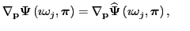 and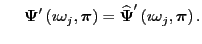 |